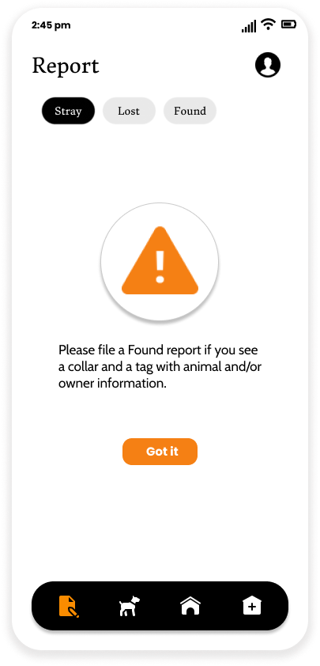
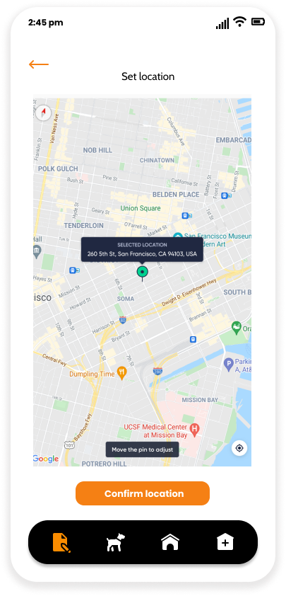
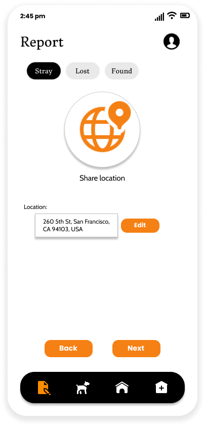
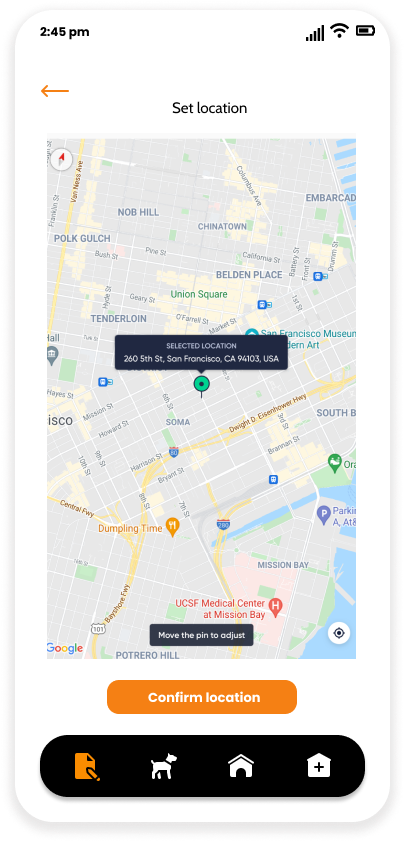
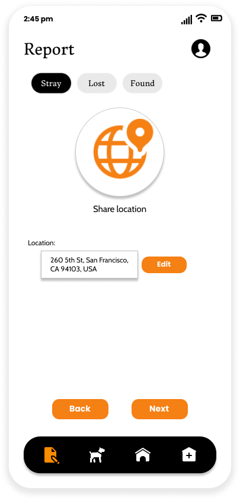
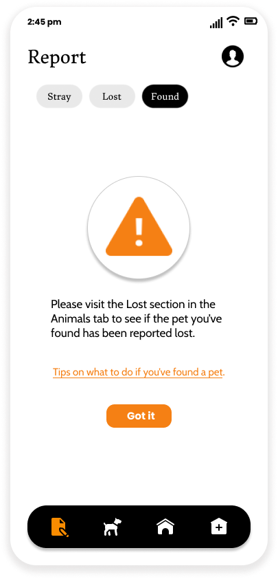
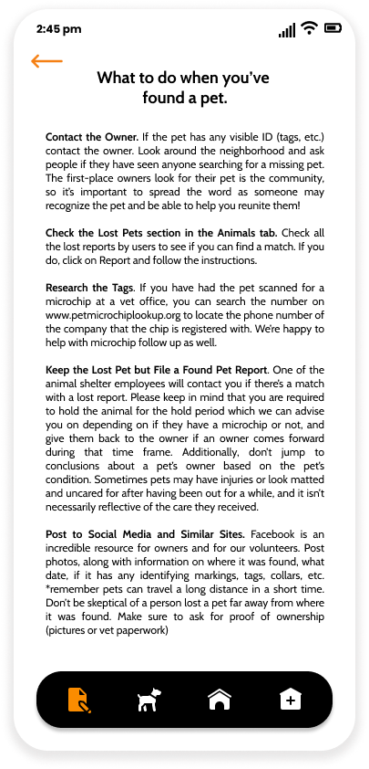

Centralized Animal Rescue or CAR lets users report stray/found animals and sends alerts to a number of animal shelters based on proximity and availability.
Initially, users are advised to check if the animal has a tag with owner and/or animal information. A Found report should be filed if a tag does exist on the animal.

Users are first asked to upload a photo of the animal. Users also have the option of capturing a photo or uploading one from their library, uploading and deleting multiple photos.


Next, users are asked to share location information so that animal shelter employees can track the reported animal. Users here have the option of manually setting the location on the map or searching for the location.
 



Users are then asked for certain details about the animal(s) they intend to report. Personal details will be automatically filled in using the information on the user profile. Whereas details such as 'No of animals' and 'Animal type' will be manually filled in. Users are also given the option of provinding a description of the animal including any necessary details.

Initially, users are advised to check the Lost section on the Animals tab to see if the pet they've found has been reported missing. Users are also given tips on what to do when they find a missing pet.
 
Users are then asked to fill in the information on the tag of the animal. This includes details such as animal name, owner name and phone number.